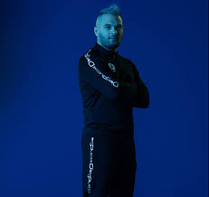

- 
Jul, de son vrai nom Julien Mari, est un rappeur et chanteur français, né le 14 janvier 1990 dans le 12e arrondissement de Marseille.
Il publie son premier single, Sort le cross volé, en novembre 2013 suivi en février 2014 d'un album entier, Dans ma paranoïa, le premier d'une série prolifique : deux albums complets par an depuis le début de sa carrière, tous certifiés au moins disque de platine. En 2015, Jul quitte le label Liga One Industry à la suite de désaccords financiers et fonde son propre label indépendant, D'or et de platine. L'année suivante, il reçoit la récompense du meilleur album de musique urbaine aux 32es Victoires de la musique pour l'album My World.